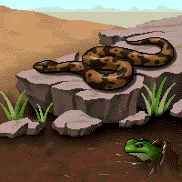

Thermoregulation is the maintenance of internal temperatures within a range that allows cells to function. It may involve both physiological and behavioral adaptations. For example, humans thermoregulate by sweating and shivering, dogs by panting, and snakes by basking on sunny rocks.
 Because ectotherms' temperature remains close to that of their environment, they face special challenges in thermoregulation. Ectotherms exhibit a variety of behaviors that allow them to gain or lose heat. Examples include basking in the sun and burrowing in mud. Because metabolic rate increases with increasing temperature, ectotherms do not become active until their body has absorbed heat and warmed up. This accounts for the sluggish early morning behavior of ectotherms such as snakes.